Στη UML, τα διαγράμματα δραστηριότητας απεικονίζουν τη σειρά με την οποία εκτελείται μια σειρά εντολών ή ενεργειών και οι οποίες αφορούν μια γενικότερη δραστηριότητα.
Για παράδειγμα η δραστηριότητα “Εγγραφή” η οποία αφορά την εγγραφή ενός χρήστη σε έναν ιστότοπο, αποτελείται από μια σειρά ενεργειών όπως συμπλήρωση φόρμας, έλεγχος όνοματος χρήστη κ.λπ..
Με άλλα λόγια, περιγράφουν την εσωτερική λειτουργία μιας δραστηριότητας.
Η δραστηριότητα μπορεί να αφορά ένα αντικείμενο αλλά και περισσότερα του ενός.
Τα διαγράμματα ενεργειών χρησιμοποιούν περισσότερο τη λογική των διαγραμμάτων ροής (flow charts).
Απεικονίζεται με ένα ορθογώνιο με στρογγυλεμένες γωνίες. Το στοιχείο αυτό περιέχει όλες τις ενέργειες που χρειάζονται για να ολοκληρωθεί η δραστηριότητα.
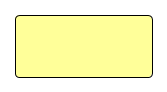Απεικονίζεται με το ίδιο σχήμα όπως και η δραστηριότητα και περιγράφει μια ενέργεια που εκτελείται για να ολοκληρωθεί η δραστηριότητα.
Το ότι χρησιμοποιείται το ίδιο σχήμα υποδηλώνει ότι η ενέργεια μπορεί να θεωρηθεί ως μια μικρή δραστηριότητα ή ως μια υπο-δραστηριότητα.
Το ίδιο ισχύει και για την δραστηριότητα. Μπορεί δηλαδή να θεωρηθεί ως μια υπερ-ενέργεια.
Απεικονίζεται με ένα βέλος και δείχνει τη χρονική σειρά των ενεργειών και πως γίνεται η μετάβαση από ενέργεια σε ενέργεια.
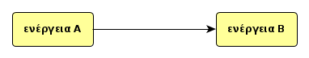Απεικονίζεται με έναν μαύρο κύκλο και συμβολίζει το σημείο έναρξης των ενεργειών. Σε κώδικα, είναι το σημείο όπου το αντικείμενο δημιουργείται.
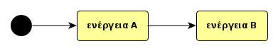Απεικονίζεται με έναν άσπρο κύκλο και μαύρο κέντρο και συμβολίζει το σημείο λήξης των ενεργειών. Σε κώδικα, είναι το σημείο όπου το αντικείμενο καταστρέφεται.
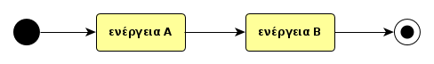Απεικονίζεται με έναν ρόμβο και δείχνει τις επιλογές που μπορεί να υπάρχουν στη ροή μιας ενέργειας. Σε κώδικα, μπορεί να αντιστοιχεί σε μια δομή: if ... else ... .
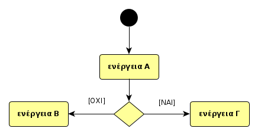Επίσης, χρησιμοποιείται σε περιπτώσεις όπου μια ενέργεια μπορεί να διασπαστεί σε δύο ή περισσότερες υπο-ενέργειες οι οποίες μπορούν να εκτελεστούν ανεξάρτητα η μια από την άλλη χωρίς να δίνεται προτεραιότητα σε κάποια ούτε να υπάρχει εξάρτηση της μιας από την άλλη και κατά μια έννοια παράλληλα. Τέλος, χρησιμοποιείται ως σημείο σύνδεσης όπου καταλήγουν οι διασπασμένες υπο-ενέργειες.
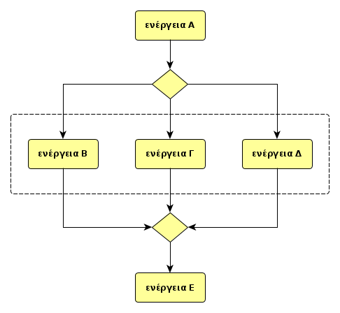Για να φανεί ότι οι διασπασμένες ενέργειες αποτελούν μέρη μιας γενικότερης ενέργειας, τοποθετούνται σε ένα ορθογώνιο με διακεκομμένο περίγραμμα και στρογγυλεμένες γωνίες όπως στο σχήμα.
Οι διχάλες και ενώσεις συμβολίζονται με το ίδιο σχήμα· Μία μαύρη γραμμή που μπορεί να είναι οριζόντια ή κάθετη ανάλογα με τη ροή του διαγράμματος.
Δείχνουν την αρχή και το τέλος μιας ενέργειας όταν αυτή διασπάται σε ξεχωριστά νήματα (threads). Τα νήματα, που μπορούν να θεωρηθούν ως υπό-ενέργειες, εκτελούνται παράλληλα και σύγχρονα.
Σύγχρονα σημαίνει ότι πρέπει να ολοκληρωθούν όλα τα νήματα για να περάσουμε στην επόμενη ενέργεια.
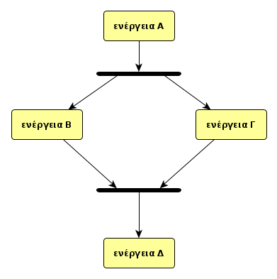Σε ένα διάγραμμα δραστηριότητας, το αντικείμενο (object) απεικονίζεται ως ορθογώνιο. Σε πολλές περιπτώσεις θέλουμε να δείξουμε ότι μια ενέργεια χρησιμοποιεί κάποιο αντικείμενο με κάποιον τρόπο.
Όταν για παράδειγμα, μια μετάβαση από μια ενέργεια καταλήγει σε ένα αντικείμενο ή όταν σε μια μετάβαση από την ενέργεια Α στην ενέργεια Β χρειάζεται και η αποστολή κάποιου αντικειμένου.
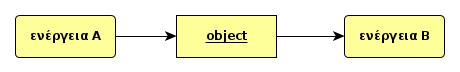Το παραπάνω σχήμα μπορεί να απεικονιστεί και ως εξής:
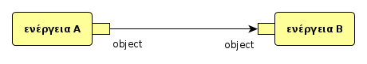Για να απεικονίσουμε μια εξαίρεση που μπορεί να προκύψει μέσα από μία ενέργεια χρησιμοποιούμε τον παρακάτω συμβολισμό.
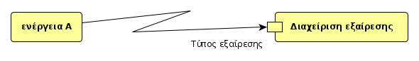Για να απεικονίσουμε μια ακύρωση που μπορεί να προκύψει μέσα από μία ενέργεια χρησιμοποιούμε τον παρακάτω συμβολισμό.
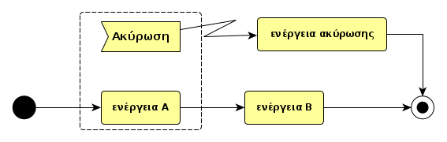Φόρμα εγγραφής με σημειώσεις.
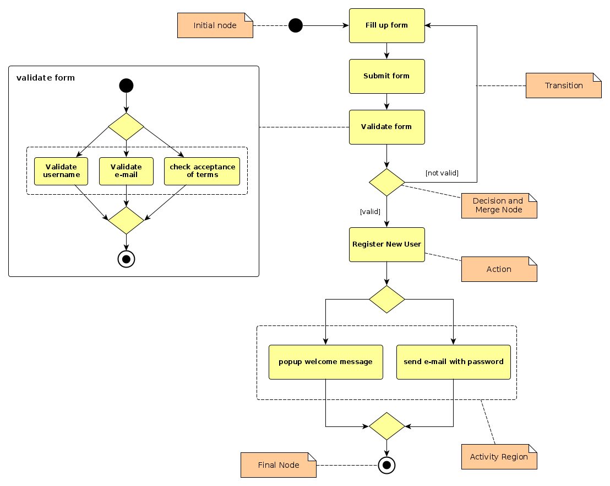